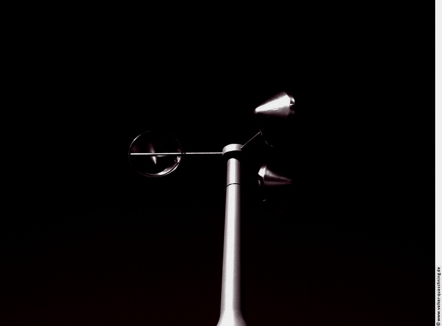
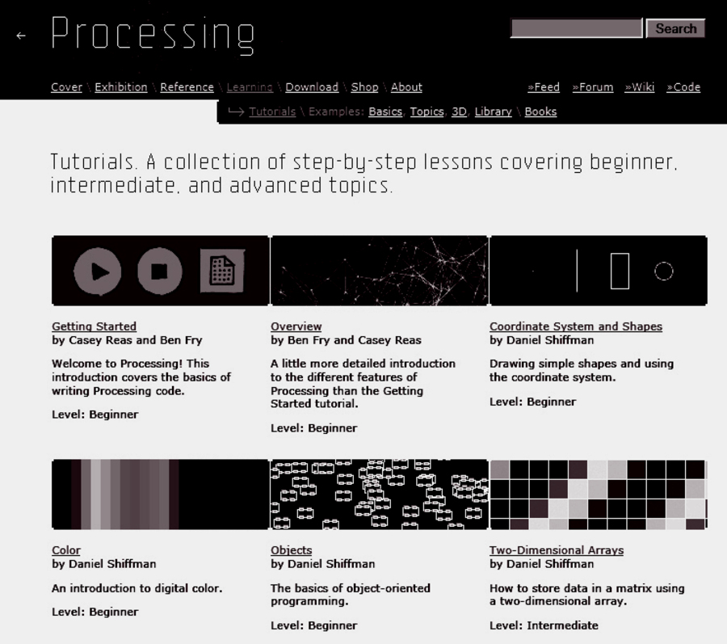
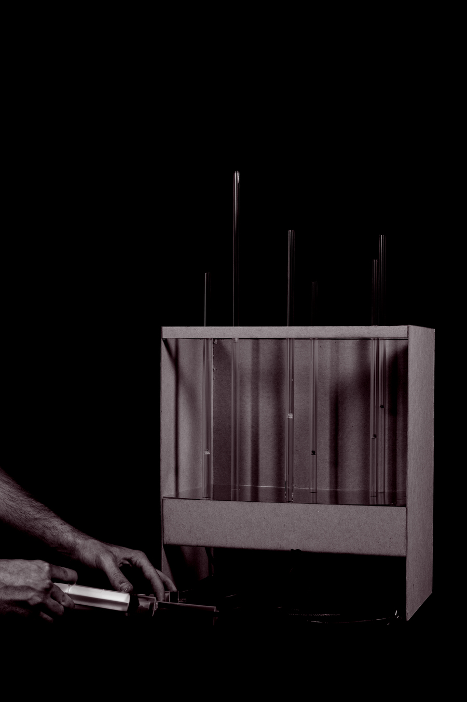

In the highly digitized age of the 21st century, architecture has become so thoroughly enmeshed within a network of other disciplines that what we are witnessing are new hybrid, mutant forms of practice that serve to reinvent the discourse of architecture as we know it.
Neil Leach — AD: Digital Cities
Static → Dynamic
Advances in technology have drastically altered traditional methods of analysis, construction, representation, and collaboration. Architects and designers address dynamic architectural elements and temporal landscapes through computational devices that are responsive to humans and ephemeral environmental stimuli. The paradigm shift in architectural and environmental design from the static to the dynamic requires designers to understand how responsive objects and systems function within larger ecological fields. This advanced topic studio explores the role of the designer and their ability to develop responsive architectural and landscape systems — researching sensing devices, diagramming and mapping site-related and real-time data, developing working prototypes and case studies, and proposing speculative scenarios. The studio engages a range of sites throughout Louisiana, from the rural landscape of the Atchafalaya Basin to the urban setting of New Orleans, organized around concepts of emergence, object orientation, self-organization, and cultural and social expression.“Infrastructure, as we know it, is parasitic — an external organizing framework, a prosthetic.”



About the studio
Responsive Systems is an advanced topics studio at Louisiana State University, taught jointly between the Robert Reich School of Landscape Architecture and the School of Architecture. The studio explores the role of the designer in developing responsive architectural and landscape systems — moving from the static to the dynamic through sensing devices, real-time data, working prototypes, and speculative scenarios.
Faculty: Bradley Cantrell (Associate Professor, Robert Reich School of Landscape Architecture) and Frank Melendez (Assistant Professor, School of Architecture). Meeting: Monday, Wednesday, and Friday, 1:40–17:30, Room 226 Design Building.
The studio is divided into two phases. Phase 01 engages students in an international competition — the 4th Advanced Architecture Competition, City Sense — asking for visions of sensor-driven habitats and cities. Phase 02 carries the competition proposals forward into a series of digital and physical prototypes, developed through workshops in Processing, Arduino, Rhino, Grasshopper, and Firefly.